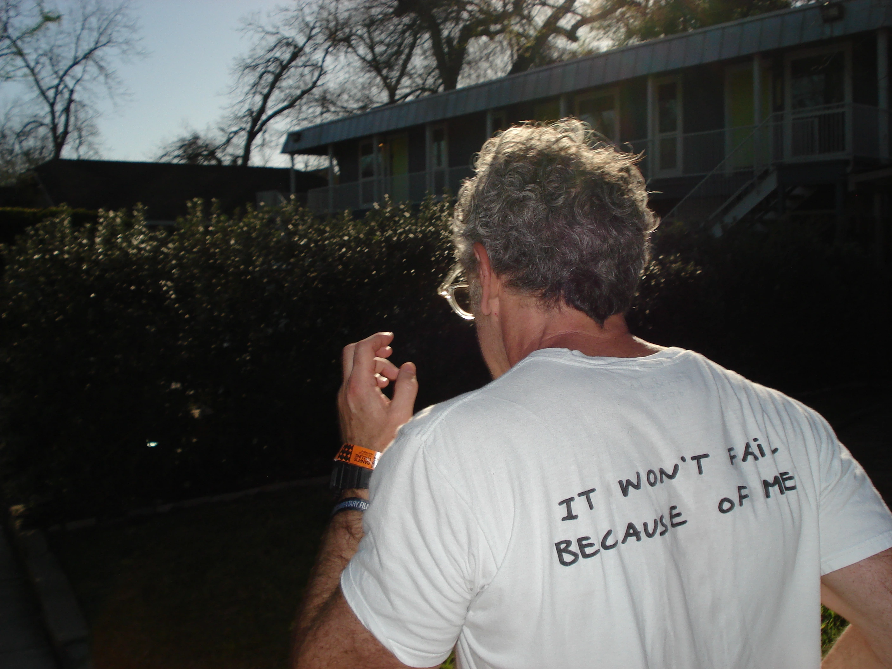
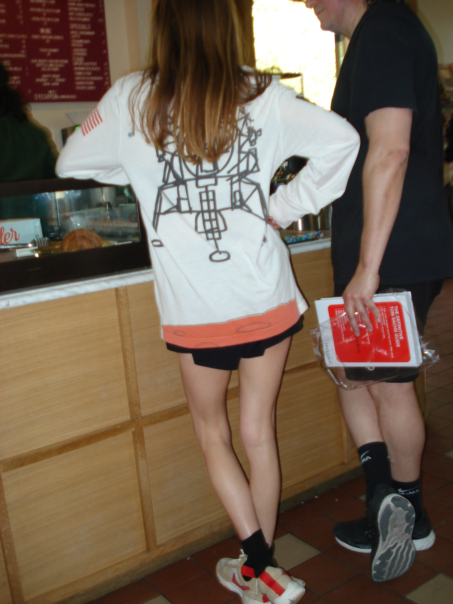
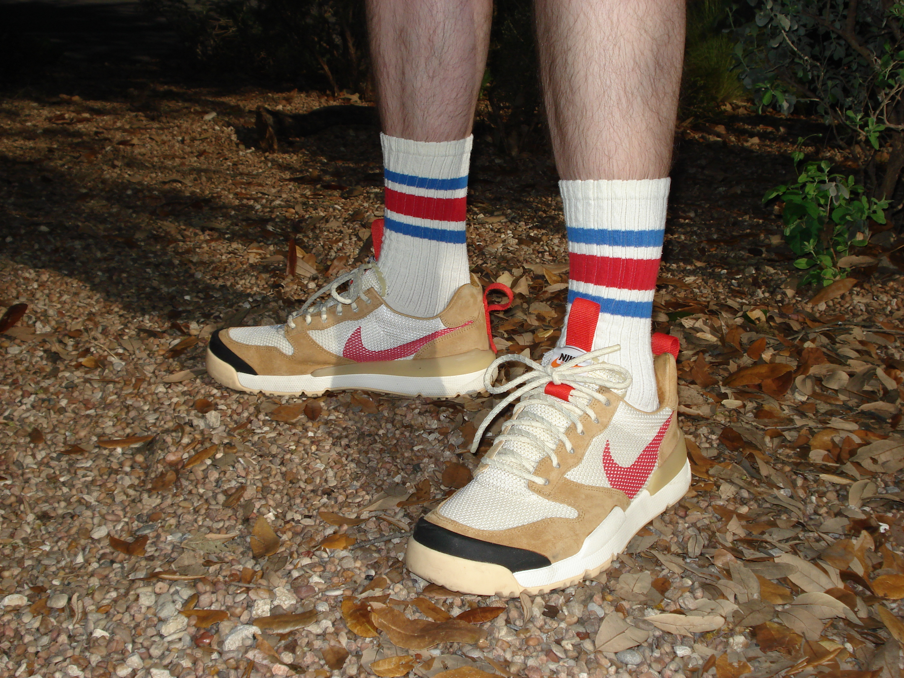

Tom Sachs pulled up to my favorite neighborhood bookstore, First Light Books, for his SXSW book tour. I showed up early, which was realllllly not my thing, but whatever — felt necessary.
The line was shockingly short, maybe twenty-or-so people. No fanfare, no crowds, just a few folks milling around.
Tom just walked by, took a quick call on his phone, then went inside. Ten minutes later, he came back out and met a crowd of maybe thirty middle-aged dudes, and suddenly the energy shifted.
You could feel it in the air.
Most people were at First Light for their usual ice-matcha-whatever-the-fuck or to skim the recommended section. But for us?
Big IYKYK moment.And I can't lie… that shit was dope.
We huddled on the lawn and the vibe was tangible. These were the die-hards — folks who’ve been following Sachs' work for years.
Merch was everywhere. Mars Yards on every foot imaginable. I’ve never seen so many in one place.
One guy? Full-on Ten Bullets tattoo, head-to-toe TS merch. Crazyyyyyy.
Walking up, it felt like stumbling upon a cult — real Midsommar energy, but somehow… not as weird as you'd think. Watching art and pop culture collide like this felt like watching Warhol eat that cheeseburger live.

Tom leading the charge toward the Bingo Point.
Before we started, the only guidance Mr. Sachs gave us was a quote from Bruce Lee: “Hard work beats talent when talent doesn’t work hard.”
That’s it. No pep talk, no monologues.
Then, we all queued up and prepared to take the Out and Back ISRU challenge.
So what the hell is even an ISRU?
"I.S.R.U is a discipline."
Basically: use what you've got to make what you need — it stands for In Situation Resource Utilization.
But what's that got to do with running?
Well dear reader, Mr. Sachs says that I.S.R.U is a way to train your mind to be resourceful in any situation. It’s about improvisation, creativity, and problem-solving under pressure. The run was just a framework for practicing that mindset.
Here's how it went down: we had to run out to a Bingo Point — a spot we chose on the map, and leave a mark. Then we had to run back within the same time we got there.
Instructions:
1 – Plan your course.2 – Set a timer for 10 minutes.
3 – Start your run. Go easy. Relax and be patient.
4 – Run your course for 10 minutes.
5 – Stop when the time is up — the Bingo Point.
6 – Mark this spot. Use any means necessary.
7 – You have 10 minutes to get back.

Tom Sachs former intern, Laura — merch head-to-toe, fully committed to the mission.
The run started with about thirty people, but by the time we got back, the crowd had swelled to over a hundred. Watching the fans move through it, fully committed, was almost hypnotic. Felt like watching a drill sergeant marshal a group: no shortcuts, no excuses, just focus and execution.
That said, whispers persist that this same intensity and strictness have bled into his studio culture — a level of rigor that makes you think of Whiplash, where J.K. Simmons hurls a metal chair across the room at Miles Teller for missing a beat.
There’s a fine line between intensity and cruelty, though. But when the results speak for themselves… what then? I catch myself asking this a lot when talking about great musicians, athletes, or anyone whose obsession borders on obsession itself.
Does the weight of genius allow a wider margin for scrutiny — or for grace? Maybe… I don’t know… but it’s worth thinking about.
After we returned, the book signing began. Pretty standard stuff — people brought their shoes, tee-shirts, and books to the table to get signed. The line slowly dwindled, Tom eventually left, and the event wrapped up around 8PM.
Honestly though? This was the coolest fucking thing I’ve done all year.
Not just the run, or the book signing, or even seeing Tom Sachs, but the whole experience — the fleeting perfection of a moment where everyone was exactly where they were supposed to be and doing what they were supposed to do.
Hm… maybe I'll watch some Bruce Lee now.

→